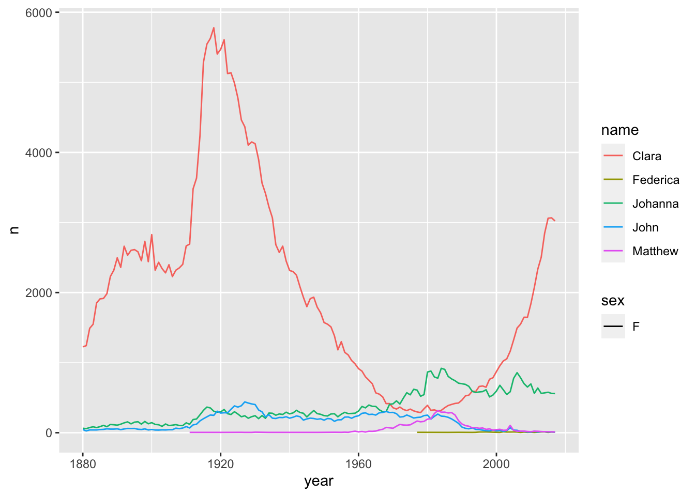
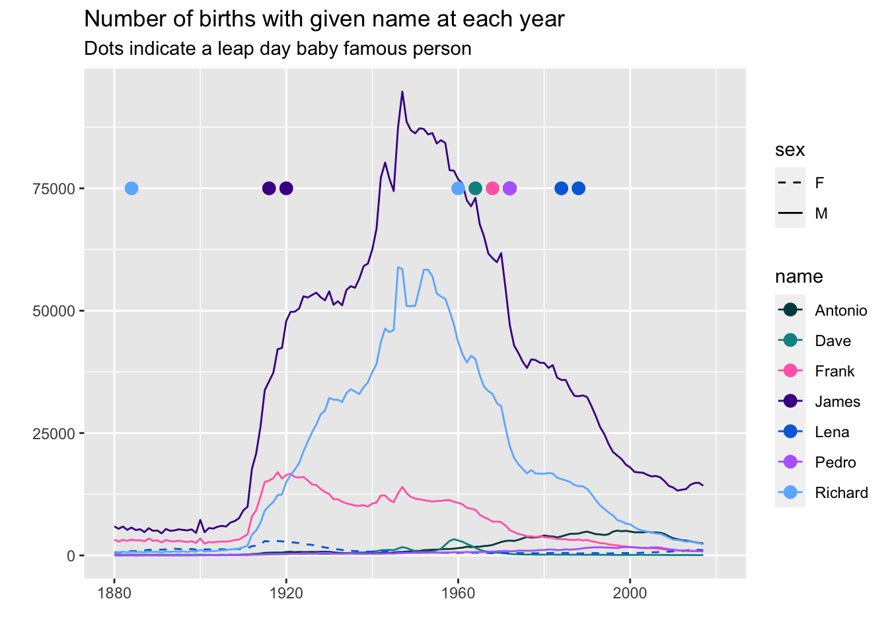
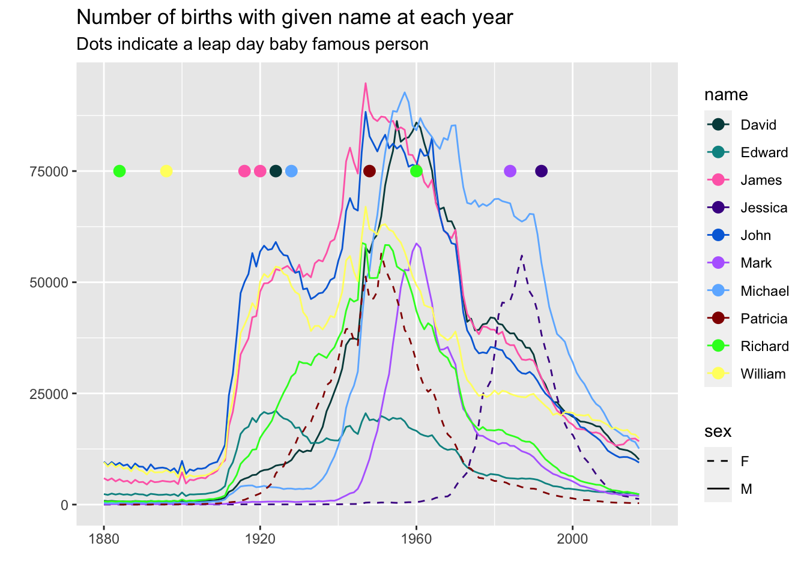

library(tidyverse) # ggplot, lubridate, dplyr, stringr, readr...
library(babynames)
library(praise)People and events on Leap Days
The Data
Happy Leap Day! This week’s data comes from the February 29 article on Wikipedia.
February 29 is a leap day (or “leap year day”), an intercalary date added periodically to create leap years in the Julian and Gregorian calendars.
One event that’s missing from Wikipedia’s list: R version 1.0 was released on February 29, 2000.
events <- readr::read_csv('https://raw.githubusercontent.com/rfordatascience/tidytuesday/master/data/2024/2024-02-27/events.csv')
births <- readr::read_csv('https://raw.githubusercontent.com/rfordatascience/tidytuesday/master/data/2024/2024-02-27/births.csv')
deaths <- readr::read_csv('https://raw.githubusercontent.com/rfordatascience/tidytuesday/master/data/2024/2024-02-27/deaths.csv')babynames |>
filter(name == "Matthew" | name == "John" | name == "Federica" | name == "Johanna" | name == "Clara") |>
filter(sex == "F") |>
ggplot(aes(x = year, y = n, color = name)) +
geom_line(aes(lty = sex))
babynames |> filter(name == "Jaguar")# A tibble: 8 × 5
year sex name n prop
<dbl> <chr> <chr> <int> <dbl>
1 1992 M Jaguar 8 0.00000381
2 1994 M Jaguar 8 0.00000393
3 1995 M Jaguar 12 0.00000597
4 2002 M Jaguar 7 0.00000339
5 2004 M Jaguar 5 0.00000237
6 2013 M Jaguar 6 0.00000298
7 2014 M Jaguar 5 0.00000245
8 2017 M Jaguar 6 0.00000306births <- births |>
separate(person, c("Fname", "Lname", "other")) leap_names <- births |> # create a list of duplicate leap names
group_by(Fname) |>
summarize(count = n()) |>
filter(count >= 2)
leap_names# A tibble: 7 × 2
Fname count
<chr> <int>
1 Antonio 2
2 Dave 2
3 Frank 2
4 James 3
5 Lena 2
6 Pedro 2
7 Richard 2leap_births <- babynames |>
filter(name %in% leap_names$Fname) |> # names that happen at least twice
group_by(name, year) |>
mutate(diff = n - lag(n), # measures women minus men (only for M rows)
diff_plus = n - lead(n)) |> # measures men minus women (only for F rows)
mutate(keep_sex = case_when(
n > abs(diff) ~ "M",
n > abs(diff_plus) ~ "F",
n < abs(diff) ~ "F",
n < abs(diff_plus) ~ "M",
TRUE ~ sex
)) |>
filter(sex == keep_sex)
leap_births# A tibble: 966 × 8
# Groups: name, year [966]
year sex name n prop diff diff_plus keep_sex
<dbl> <chr> <chr> <int> <dbl> <int> <int> <chr>
1 1880 F Lena 603 0.00618 NA NA F
2 1880 M James 5927 0.0501 5905 NA M
3 1880 M Frank 3242 0.0274 3229 NA M
4 1880 M Richard 728 0.00615 NA NA M
5 1880 M Dave 131 0.00111 NA NA M
6 1880 M Pedro 31 0.000262 NA NA M
7 1880 M Antonio 26 0.000220 NA NA M
8 1881 F Lena 555 0.00561 NA NA F
9 1881 M James 5441 0.0502 5417 NA M
10 1881 M Frank 2834 0.0262 2825 NA M
# ℹ 956 more rowspal <- c("#004949","#009292","#ff6db6",
"#490092","#006ddb","#b66dff","#6db6ff",
"#920000","#24ff24","#ffff6d")
leap_births |>
ggplot(aes(x = year, y = n)) +
geom_line(aes(color = name, lty = sex)) +
geom_point(data = filter(births, Fname %in% leap_names$Fname),
aes(color = Fname, x = year_birth), y = 75000, size = 3) +
xlim(1880, 2020) +
scale_linetype_manual(values = c("dashed", "solid")) +
scale_color_manual(values = pal) +
labs(y = "",
x = "",
title = "Number of births with given name at each year",
subtitle = "Dots indicate a leap day baby famous person")
leap_births2 <- babynames |>
filter(name %in% births$Fname) |> # all the names in the leap year data
group_by(name, year) |>
mutate(diff = n - lag(n), # measures women minus men (only for M rows)
diff_plus = n - lead(n)) |> # measures men minus women (only for F rows)
mutate(keep_sex = case_when(
n > abs(diff) ~ "M",
n > abs(diff_plus) ~ "F",
n < abs(diff) ~ "F",
n < abs(diff_plus) ~ "M",
TRUE ~ sex
)) |>
filter(sex == keep_sex) |>
ungroup() |>
group_by(name) |>
mutate(tot_names = sum(n)) |>
filter(tot_names > 1000000)
leap_births2 |>
slice_head(n=1) |>
arrange(tot_names)# A tibble: 10 × 9
# Groups: name [10]
year sex name n prop diff diff_plus keep_sex tot_names
<dbl> <chr> <chr> <int> <dbl> <int> <int> <chr> <int>
1 1880 F Jessica 7 0.0000717 NA NA F 1044939
2 1880 M Edward 2364 0.0200 NA NA M 1288725
3 1880 M Mark 85 0.000718 NA NA M 1349865
4 1884 F Patricia 6 0.0000436 NA NA F 1571692
5 1880 M Richard 728 0.00615 NA NA M 2563082
6 1880 M David 869 0.00734 NA NA M 3611329
7 1880 M William 9532 0.0805 9502 NA M 4102604
8 1880 M Michael 354 0.00299 NA NA M 4350824
9 1880 M John 9655 0.0815 9609 NA M 5115466
10 1880 M James 5927 0.0501 5905 NA M 5150472leap_births2 |>
ggplot(aes(x = year, y = n)) +
geom_line(aes(color = name, lty = sex)) +
geom_point(data = filter(births, Fname %in% leap_births2$name),
aes(color = Fname, x = year_birth), y = 75000, size = 3) +
xlim(1880, 2020) +
scale_linetype_manual(values = c("dashed", "solid")) +
scale_color_manual(values = pal) +
labs(y = "",
x = "",
title = "Number of births with given name at each year",
subtitle = "Dots indicate a leap day baby famous person")
praise()[1] "You are cat's pajamas!"